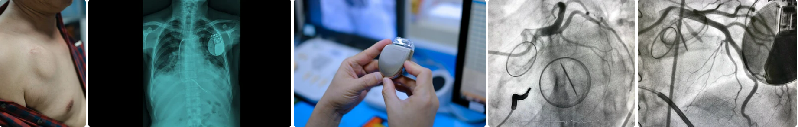

An Automatic Implantable Cardioverter Defibrillator (AICD) is a small electronic device implanted in the chest or abdomen of a person with certain types of heart conditions. It is designed to monitor the heart's rhythm and deliver therapy if dangerous irregularities are detected.

An Automatic Implantable Cardioverter Defibrillator (AICD) is a medical device designed to monitor and regulate abnormal heart rhythms, particularly those that can be life-threatening. It is implanted under the skin, typically in the chest area, and connected to the heart through leads or wires.
The AICD constantly monitors the heart's electrical activity and is programmed to deliver electrical shocks when it detects dangerous irregularities, such as ventricular tachycardia (fast, abnormal heartbeat) or ventricular fibrillation (rapid, erratic heartbeat). These shocks can restore normal heart rhythm and prevent sudden cardiac arrest.
Additionally, some AICDs have pacing capabilities to help regulate slower heart rhythms. The device is programmable, allowing healthcare providers to customize its settings to suit the specific needs of the individual patient. AICDs have been instrumental in saving lives and providing a safety net for individuals at risk of life-threatening arrhythmias.
About the procedure
AICD procedure involves using a sedative that relaxes the individual and allows them to remain aware of the surroundings. The heartbeat is regulated by delivering shocks to the heart whenever an abnormal heartbeat occurs.
Suggested specialists for Heart Surgery?
The right doctor to consult for Automatic Implantable Cardioverter Defibrillators is a cardiologist and an Electrophysiologist.
Success Rate
The success rate of AICD is usually high and varies between 82-90%.
The life expectancy of patients with an AICD is generally around 5 to 7 years or longer, depending on usage and the type of device.
Inclusions in the package
The cost of AICD may include:
- Preoperative diagnostic tests cost (Chest x-ray, ECG, Cardiac catheterization, blood tests, etc.)
- Procedure cost
- Type of implant being used
- Post-Operative cost (depends on the number of follow-up sessions)
- Medicine cost (Antiarrhythmics, Pain Killers, Antibiotics, etc.)
- Patient's hospital stay Note:Patients with ICD should take special care and carry an identification card since a few factors, such as the anti-theft system, may interact with the ICD Device.
Cost related to Angiography
| Treatment name | Cost range |
|---|---|
| AICD | Rs.621600 to Rs.828800 |
| CRT- D Implant (Cardiac Resynchronization Therapy) | Rs.754800 to Rs.1006400 |